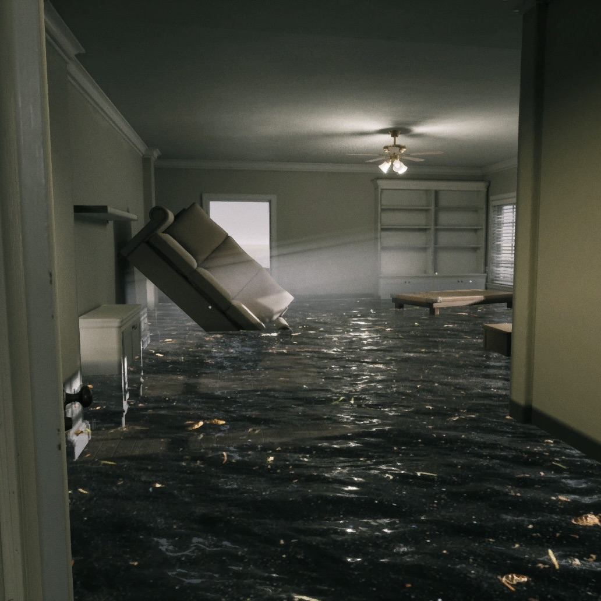

無限に平坦な海が広がり、「部屋」群が浮遊する空間。
この空間に足を踏み入れた貴方は水浸しになるだろう。
「部屋」の内部は海水により浸水している。
この空間に広がる海は深さ30m、約水温10℃であり、
通常の海水で構成されているが、水中には微生物しか存在しない。
「部屋」のどこかに必ずEXITが存在するが、
この空間から潜水をすればLevel8の空間へ辿り着ける。
海から「部屋」に戻れる準備をしておくことをお勧めする。
理解度:50%
危険度:海_5/5 部屋_0/5